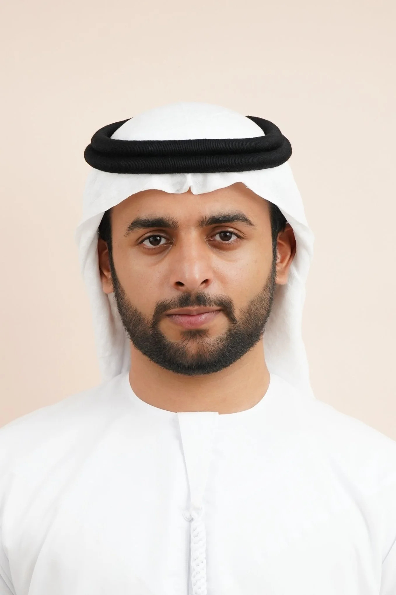

Welcome to My Digital Portfolio
Hello! I'm Saif Khalfan Saif Al Mazrouei, an Emirati student pursuing a triple bachelor's degree in Data Science, Computer Science, and Information Science at the University of Wisconsin-Madison. This website showcases my journey in technology, innovation, and personal interests.
Quick Facts About Me
As an international student from Abu Dhabi, I bring a unique perspective combining Middle Eastern heritage with American academic excellence. My work at the Abu Dhabi Investment Authority has given me real-world experience in financial technology and data science applications.
Current Focus Areas
- Academic Excellence - Maintaining a 3.58 GPA while completing three majors simultaneously
- Professional Development - Developing cutting-edge AI solutions at ADIA
- Technology Innovation - Creating tools that transform business processes
- Gaming Communities - Building and competing in virtual worlds
What You'll Find Here
- My flagship project PRISM and its revolutionary impact on investment data processing
- My passion for gaming, from Minecraft survival worlds to Battlefield 6 competitive play
- Insights into artificial intelligence, machine learning, and emerging technologies
- My background bridging Abu Dhabi and Madison cultures
Explore the navigation menu above to learn more about my work and interests!
Connect with me professionally on LinkedIn or learn more about technology innovations.